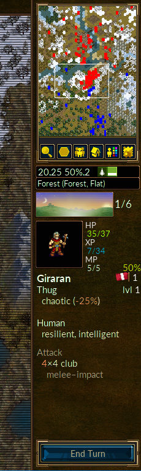

Table of Contents
List of Tables
Битката за Уеснот е ходова стратегическа игра с фентъзи облик.
Издигнете величествена армия, докато постепенно обучавате зелените си новобранци в закоравели ветерани. В по-късните игри привикайте най-могъщите от тях, за да сформирате нечувана сила! Съберете войската си от широк набор специалисти, за да подготвите сила, способна да се справи с всевъзможни условия и врагове.
Уеснот се разгръща в множество различни саги. Ще се сражавате против орки, немъртви и бандити в покрайнините на уеснотското кралство; ще се борите редом с дракони по високите планини, елфи в зелените трели на гората Аитънууд, джуджета из величествените зали на Кналга, дори океаниди в Перления залив. Можете да се биете, за да възвърнете трона на Уеснот или да използвате ужасяващата сила на немъртвите, за да покорите смъртния свят, или да поведете великото си оркско племе в победа против човеците, които разрушават земите Ви.
Можете да избирате измежду над двеста видове единици (пехотинци, кавалерия, стрелци и магьосници са само върхът на айсберга), а схватките Ви по размер ще бъдат от малки засади до сблъсъци на цели армии. Предизвикайте приятелите си - или непознати - на епични фентъзи битки в интернет пространството.
Битката за Уеснот е "open-source" софтуер с енергично общество от доброволци, което постоянно допринася за развитието на играта. Можете да си създавате собствени единици, мисии, дори сценарии за цяла кампания. Чрез нашият add-on сървър имате достъп до всичко създадено от обществеността, а най-доброто бива вплетено в официалните издания на Уеснот.
Познатата част от Великия континент, където Уеснот е разположен, обикновено се разделя на три региона: Северните земи, където властва беззаконие; кралството на Уеснот, заедно с княжеството Еленсефар и територията на югозападните елфи в гората Етън, и отвъд.
Кралството на Уеснот лежи в центъра на тази земя. Границите му са Великата река на север, планините Дюлат на изток и юг, ръбът на гората Етън на югозапад и Океанът на запад. Еленсефар, някогашна провинция на Уеснот, граничи с Великата река на север, чрез неясно установена граница с Уеснот на изток, Перленият залив на юг и океанът на запад.
Северните земи са дива територия на север от Великата река. Разнообразни групи от орки, джуджета, варвари и елфи населяват региона. На изток и север лежи гората Линтанир, където Северните елфи движат своите мистериозни дела в кралството си.
Из земята са пръснати селища, където можете да лекувате войските си и да събирате приходи, с които да ги поддържате. Освен това ще трябва да прекосявате планини и реки, да си проправяте път през гори, планини и тундри, да не говорим за откритите полета. Из всяка една от тези земи ще срещнете различни приспособени създания, които живеят там и ще защитават дома си с лекота и свирепост.
Светът на Уеснот е обитаван от хора, елфи, джуджета, орки, змейове, сауриани, океаниди, наги и още много чудати, ала потайни раси. Прокълнатите земи гъмжат от немъртви, призраци и фантоми; чудовища се спотаяват в подземия и руини. Всяко едно обитава предпочитана земя. Хората се срещат най-често из умерените равнини. Орките и джуджетата са си у дома сред хълмовете, планините и подземните пещери. Из горите елфите остават ненадминати. А господари на реки и океани са океаниди и наги.
Поради технически причини, расите се групират: например орките често се сработват с тролове, а елфите с джуджета или хора. Други групировки представят разделенията в човешкото общество: лоялисти срещу престъпници, например. През повечето кампании ще управлявате единици от една групировка. Но понякога тази групировка ще се съюзи с други, така че да се изправите пред неколцина врагове.
Когато Уеснот бъде включен ще покаже началния заден фон и колона от копчета, които представляват Главното меню. Копчетата работят само с мишка. На нетърпеливите препоръчваме: изберете "Language", за да посочите своя език, а после изберете "Обучение", за да научите повече за играта; след него си пуснете кампанията "История за двама братя", като натиснете на копчето "Кампания" и го изберете от списъка.

- Обучение
- Обучението е истинска, но простичка игра, която ще Ви научи на основите, за да можете да играете. Няма значение дали ще спечелите или загубите, важното е да се научите. Натиснете на копчето Обучение, за да започнете. В него ще влезете в ролята на принц Конрад или принцеса Ли'зар, а Ваш учител ще е възрастният магьосник Делфадор - слушайте го внимателно, иначе ще Ви превърне в жаба.
- Кампания
- Уеснот е главно замислен, за да играете кампании, които представляват серия от свързани мисии. Натиснете на това копче, за да започнете нова кампания. Там ще можете да си изберете от достъпните за компютъра Ви (или да си свалите допълнително, ако пожелаете). Изберете кампанията си и натиснете върху ОК, за да започнете или Отказ, за да се върнете. Всяка кампания има трудности: лесна, средна (нормална) или трудна. Препоръчваме средната, която е предизвикателна, без да е затрудняваща. В случай, че имате затруднения с лесната трудност, секцията относно Основна стратегия ще Ви помогне. Щом изберете трудността си, ще започнете с първата мисия от кампанията.
- Мултиплейър
- Изберете това копче, за да играете единична карта срещу един или повече опоненти. Можете да играете игри през интернет или на компютъра си, против компютър или друг човек. Когато натиснете върху това копче, ще излезе прозорец, през който да изберете как искате да играете тази карта. За да научите повече, погледнете карти.
- Зареждане
- Натиснете върху това копче, за да заредите своя записана игра. Ще видите прозорец с изредени записани игри. Изберете играта и натиснете върху ОК, за да я заредите и да продължите или Отказ, за да се върнете към Главното меню. Ако искате да прегледате някоя игра натиснете върху кутийката "Покажи преглед". Заредената игра ще Ви покаже всичките ходове от начало.
- Допълнения
- Натиснете върху това копче, за да се свържете със сървъра на играта, където ще намерите множество творения от обществото. Сред тях има и множество кампании, ери за мрежова игра (съществени групировки) и карти за мрежова игра. С копчето "Премахни допълнения" ще можете да ги премахнете когато вече не ги искате.
- Творчески инструменти
- Натиснете това копче, за да включите Творческите инструменти, където ще можете да създадете Ваши карти за мрежови игри или да построите собствена кампания.
- Език
- Натиснете това копче, за да изберете езика си, а после ОК, за да го приложите или Отказ, за да продължите с настоящия. Когато Уеснот бъде включен за първи път, езикът ще бъде Английски или езикът по подразбиране за Вашия компютър, но щом го промените, играта ще бъде на този език.
- Настройки
- Натиснете тук, за да промените основните настройки.
- Заслуги
- Натиснете това копче за списък с главните творци на Уеснот. Често ще можете да се свържете с тях на живо чрез irc.libera.chat:6667 на #wesnoth или презhttps://discord.gg/battleforwesnoth
- Изход
- Това копче затваря играта Уеснот.
- Помощ
- Натиснете това копче, за да отворите вградената помощна система. Тя ще Ви предостави информация относно единици и други важни елементи за играта. Много от тях са описани и в това ръководство.
- Следващ
- Натиснете това копче, за да получите следващия малък съвет от "Томовете на Уеснот".
- Предишен
- Натиснете това копче, за да получите предния малък съвет от "Тома на Уеснот".
- i
- Натиснете това копче, за да получите версията на играта и техническа информация за нея. Това може да е полезно, когато разрешавате проблеми.
Можете да играете Битката за Уеснот по два основни начина:
- Серия от свързани мисии, сиреч кампания срещу компютъра.
- Единична карта против компютър или друг човек.
Има кампании, които могат да се играят и с по няколко играча.
Кампаниите са серия от битки с общ сюжет. Обикновено те включват около 10-20 мисии. Основното предимство на кампаниите е, че можете да развиете армията си. Със завършването на всяка мисия, останалите Ви единици се записват, за да ги използвате в следващата мисия. Ако не използвате дадена единица по време на мисия, тя се пренася към следващата, така че не губите когото не използвате.
Кампанията е основната форма, чрез която Уеснот се играе, води се най-забавната и е препоръчителна за нови играчи, за да научат тънкостите.
За да завършите единична карта, са Ви необходими между 30 минути и 2 часа. Това е най-бързата игра, но единиците Ви не се записват и не можете да използвате единици от кампанията. Можете да играете на карти против компютъра или срещу други играчи или през мрежата, или на компютъра си. Картите са достъпни през копчето "Мултиплейър" на Главното меню.
Общо взето, мултиплейър игрите се провеждат помежду играчи чрез Интернет (но, ако имате LAN, също може да играете). Всички тези игри са координирани през мултиплейър сървъра на Уеснот. Тези игри могат да продължат от 1 до 10 часа, в зависимост колко играчи участват (и спрямо размера на картата). Средното време е между 3 и 7 часа. Игрите могат да бъдат записвани и презареждани колкото си искате. Така че една игра може да трае 1 или 2 седмици, дори и да сте играли по няколко часа на ден. Когато играете единична карта, единиците Ви няма да бъдат пренесени към бъдещи игри, така че мощта на армията Ви е ограничена в рамките на същата карта.
Имате няколко възможности, когато натиснете копчето "Мултиплейър":

Това ще бъде Вашето име на мултиплейър сървъра. Ако имате профил във Форум на Уеснот можете да използвате същото име и парола, с което се вписвате там. Кутия за парола ще изникне, ако такава Ви е необходима за даденото име. Не можете да използване регистрирано име без паролата.
Тази опция директно ще Ви отведе към официалния сървър. Ще попаднете в лоби, където можете да създавате свои игри, където има вече отворени игри и ще срещнете играчи, които само чакат възможност да се включат в нов мач.
Тази опция отваря прозорец, който ще Ви позволи да въведете адресът на устройството, с което искате да се свържете. В този прозорец има и копче "Списък", който показва списък с официални сървъри, които могат да се използват за съхранение, ако главният не работи в момента.
Можете да намерите пълен списък с официални и неофициални сървъри на този сайт: Мултиплеър сървъри.
С тази опция можете да достигнете до сървъри, организирани от други играчи. Значи ако имате сървър на местната си мрежа, просто въведете адреса и номера си (по подразбиране: 15000). Например, ако искате да се свържете със сървър, който работи на устройство с адрес 192.168.0.10 и стандартния си номер, бихте въвели следното в прозореца: 192.168.0.10:15000
За да започнете мултиплейър игра, без да използвате външен сървър, ще трябва да стартирате такъв който обикновено се нарича wesnothd. Програмата автоматично се пуска, когато изберете тази опция и спира, когато всички играчи напуснат сървъра. Други играчи все още трябва да се свържат с Вас чрез TCP и 15000, за да играят на Вашия сървър. Ако сте защитени с firewall, вероятно ще трябва да промените настройките си, за да позволите прииждащи заявки към 15000, тоест да кажете на стената си да препраща такива заявки към устройството, което съдържа играта. Няма нужда да променяте нищо, ако игрите се организират на обществен сървър или от някой друг.
Тази опция създава игра на Вашия компютър. Можете да използвате този режим, за да се редувате няколко играча на един и същи компютър върху горещия стол. Такива игри отнемат горе-долу толкова време, колкото и, ако играехте през Интернет. Можете да се борите в сценарии против ИИ врагове, вместо срещу други хора. Това е добър начин, за да свикнете с различните карти, преди да опитате мултиплейър срещу истински играчи.. Това също е полезен метод за изпробване възможностите на единици от различните групировки, като избирате кой срещу кого да играе. Разбира се, можете също да ги смесвате, иначе казано, да играете с приятел срещу компютъра.

Независимо дали играете мисия или кампания, основното разположение на игралния екран, е еднакво. По-голямата част е изпълнена с карта, която показва всичко, което се случва в играта. Около картата са различните елементи, които представят полезна информация и са описани по-долу.

В горната част на екрана, отляво-надясно, са следните икони:
- Меню
- Действия
- Ходове (настоящ ход/максимум оставащи ходове)
- Вашето злато
- Селища (Вашите/общият брой)
- Наличните Ви единици
- Разходи
- Приходи
- Настоящо или оставащо време (за мултиплейър игри с времетраене)

От дясната страна на екрана, отгоре-надолу са:
- Пълна карта, оразмерена
- Настоящата полева позиция (х и y координати), защита и придвижване на настоящата единица върху даденото поле
- Настоящ тип поле
- Показател за часа от деня
- Профил на последната избрана единица
- Приключване на хода
Когато започнете дадена мисия или кампания ще имате само няколко единици на картата. Един от тях ще е Вашият водач (обозначен с икона на малка златна коронка). Водачът Ви обикновено е разположен в замък или на специално поле, на име крепост. Когато водачът е в крепост (не само Вашата, но и на завладени вражески замъци) и имате достатъчно злато, можете да набирате единици за армията си. В по-късни мисии, можете да привиквате опитни единици, които са оцелели предишните мисии. Оттам-насетне ще наберете армия, с която да покорите врага.
Първото, което вероятно бихте направили, е да си наберете първата
единица. Натиснете Ctrl+r (или с дясно копче на празно
поле от замък и цъкнете върху "Набиране"), за да наемете единица от списъка
с достъпни войски. Всяка единица се разполага върху празно поле от
замъка. Когато го изпълните, няма да можете да набирате повече
единици. Опонентът Ви се намира в замък по същия начин и въоръжава войските
си, затова не се мотайте напразно - очаква Ви битка.
В края на всяка успешна мисия, останалите Ви войски се записват автоматично. В началото на следващата карта, ще можете да ги привикате по подобен начин, както ги наемате. Привиканите войски са по-опитни от наборниците и са по-добър избор, като цяло.
Всички режими на игра използват същите войници, на име единици. Всяка единица си има Раса, Ниво и Клас. Всяка една си има силните и слабите страни, според устойчивостта им, настоящият терен и Ниво. Подробностите можете да видите в помощното ръководство в играта.
Вашите единици трупат боен опит, научават нови умения и стават по-силни. Те също могат да загинат по време на битка, затова ще трябва да попълвате обратно загубите си. Избирайте разумно, защото всяка си има силните и слаби страни, които хитрият опонент ще експлоатира.
Хубаво разгледайте кутията със задачите, когато се появи в началото на всяка мисия. Обикновено ще спечелите като надвиете всички вражески водачи, а загубата Ви ще е вследствие на смъртта на Вашия водач. Но мисиите могат да имат и други параметри - да заведете водача си до определено място, например; да спасите някого, да разрешите пъзел или да устоите на обсада за определен брой ходове.
Когато спечелите мисия, картата ще посивее, а копчето Край на хода ще се превърне в Край на мисията. Сега можете да направите неща, като да промените записите си или (ако сте в мултиплейър игра), да разговаряте с другите играчи, преди да натиснете това копче, за да продължите.
Армията Ви не се бие безплатно. Нужно Ви е злато, за да наемате и поддържате единици. Започвате всяка мисия със златото от предишната (макар че всяка мисия Ви осигурява някакъв минимум, в случай че нямате достатъчно) и можете да натрупате повече, като бързо изпълните задачите си или чрез селища. Всяко селище под Ваше управление, Ви дава по две жълтици на ход. В началото на всяка мисия си струва да завладеете максимално много селища, за да имате така необходимото злато за войната. Можете да проверите приходите си в горната част на екрана, както е описано в секцията игрален екран.
В началото на всяка мисия, Вашата игра се записва както е нормално. Ако бъдете надвити, можете да я презаредите, за да опитате отново. Щом успеете ще имате възможност да запишете следващата мисия, за да играете нея. Ако трябва да спрете по време на мисия, можете да запишете хода си и да го презаредите отново по-късно. Помнете, че добрите играчи на Битката за Уеснот не се нуждаят от записи по време на игра, ала повечето начинаещи правят точно обратното.
За да погледнете и промените използваните ключове, отворете менюто Предпочитания и изберете Ключове.
Всяка страна започва с еднакво количество злато и получава по две монети на ход, заедно с по още две за всяко завладяно селище. По време на кампания началното злато е според минимум, зададен от мисията, които се понижава с покачването на трудността на играта. Освен това, ще получите процент злато от предишната играна мисия. Точният процент зависи от мисията и обикновено е част от задачите за дадената мисия.

Основната полза от златото е да си изградите армия чрез набиране на новаци и привикване на единици от предишни мисии в кампанията. Единиците могат да бъдат наемани или привиквани, когато водачът се намира в крепост, чието разположение има поне едно празно поле.
- Натиснете с дясно копче на празно поле и изберете Набиране, за да наемете нови единици от изложения списък. Цената за наемане зависи от единицата, но обикновено е между 10 и 20 жълтици.
- Натиснете с дясно копче върху празно поле от замък и изберете Привикване, за да извикате единици от предишни мисии. Привикването струва 20 жълтици за единица. Погледнете привикване на единициза повече информация.
Всяка единица също коства издръжка. Тя обикновено е равна на нивото на единицата, освен ако тя има качество "Лоялен" (вижте отдолу). Единиците, които не са изначално наети, т.е. водача или тези, които се присъединяват към Вас доброволно - обикновено са Лоялни. Издръжката се изплаща само ако общата издръжка на единиците на дадената страна е по-висока от бройката на неговите селища. Изплатеното е разликата между бройката селища и необходимото за изплащане.
Формулата, която определя приходите на всеки ход е
2 + селища - максимум (0, издръжки - селища)
където издръжката е равна на сборът от нивата на всичките Ви не-лоялни единици.
Ако издръжката е по-висока от бройката на селищата Ви + 2, тогава тази страна започва да губи злато. Ако е равна, няма нито печалба, нито загуба.
Битката за Уеснот има стотици типове единици, които се различават по множество признаци. Освен това, всяка единица има определени качества, които ги различават от други единици в същия тип. И най-после създателите на кампаниите могат да добавят изключителни единици в кампаниите си, за да обогатят възможностите за играчите.
Основните показатели за една единица за точките й живот (ТЖ), точките движение, които има и оръжията, които може да използва, заедно с вредата им. Единиците имат и други показатели като разделение и специални умения, описани по-долу.
Всяка единица има определено разделение: праведни, неутрални, хаотични и гранични. Разделението определя колко добре се справя дадена единица в различни части от деня. Неутралните единици не се влияят. Праведните правят повече вреда през деня и по-малко нощем, а при хаотичните е обратното. Граничните единици правят по-малко вреда и през деня и нощта.
Двете фази на "ден" и "нощ" се обозначават, като Сутрин, Следобед, Първа и Втора стража, според позициите на слънцето и луната изобразени върху картата.
Следната таблица показва ефектът от различните части на деня върху нанасяната вреда от различните видове единици:
Table 2.1. Час от деня и вреда
| Ход | Изображение | Дневна фаза | Праведни | Хаотични | Гранични |
|---|---|---|---|---|---|
| 1 |

| Зора | -- | -- | -- |
| 2 |

| Ден (сутрин) | +25% | −25% | −25% |
| 3 |

| Ден (следобед) | +25% | −25% | −25% |
| 4 |

| Здрач | -- | -- | -- |
| 5 |

| Нощ (Първа стража) | −25% | +25% | −25% |
| 6 |

| Нощ (Втора стража) | −25% | +25% | −25% |
| Особеност |

| Подземие | −25% | +25% | −25% |
Имайте предвид, че някои мисии се развиват под земята, където е винаги нощ!
Например: борба между Праведна и Хаотична единица, където и двамата нанасят
12 вреда. По изгрев и здрач, двете единици ще си нанасят 12-те точки
вреда. Сутрин и следобед, праведната единица ще нанася (12 \*
1.25), т.е. 15 точки, а хаотичната (12 \*
0.75), т.е. 9 точки. По време на Първа и Втора стража, праведната
единица ще нанася 9 точки, а хаотичната - 15.
Ако неутрална единица се бори в същата ситуация, тя винаги ще нанася 12 точки вреда, независимо какъв час е.
Единиците притежават качества, които отразяват техния характер. Качествата се приписват произволно на единиците, когато биват създадени и повечето имат по две.
Възможните качества за повечето са следните:
- Интелигентен
- Интелигентните единици се нуждаят от 20% по-малко опит, за да вдигнат ниво (троловете не получават това качество). Интелигентните единици са много полезни в началото на кампаниите, защото могат да достигнат по-високи нива по-бързо. По-късно вече това качество не е така полезно, защото Развитието След Максималното Ниво (РСМН) не е предоставя значителна разлика. Ако имате множество единици на максимално ниво може да привикате тези с по-полезни качества.
- Бърз
- Бързите единици имат 1 допълнителна точка за придвижване, но 5% по-малко живот. Бързината е интересно качество, особено за бавноподвижните единици като тролове или тежка пехота. Бързите единици също така имат по-висока мобилност на суров терен, което може да е важно, когато обмисляте къде и кого да разположите. Освен това, те не са толкова издръжливи, колкото единици без това качество, затова им е трудно да удържат позиции.
- Издръжлив
- Издръжливите единици имат 4 плюс 1 ТЖ за всяко следващо ниво повече. Устойчивите единици могат да са полезни през всеки етап от кампанията и е полезно качество за всеки. Издръжливостта е най-полезна при единица, която има някакво съчетание с малко живот, добра защита или висока устойчивост. Такива единици са полезни за удържане на стратегически позиции.
- Силен
- Силните единици нанасят 1 точка вреда допълнително за всеки успешен удар в близък бой, освен че имат 1 ТЖ повече. Макар това качество да е полезно за всяка близкобойна единица, Силен е най-ефективно качество за единици с множество замахвания, като Елфическият борец. Силните единици са много полезни, когато е нужно съвсем малко вреда отгоре, за да довърши опонент.
Има и някои качества, които са само за специфични единици от определена раса. Тези са:
- Сръчен
- Сръчните единици нанасят 1 точка вреда повече за всяко успешно попадение при стрелба. Единствено елфите могат да бъдат сръчни, защото са известни с ненадминатата си грация и способност с лъка. Природният талант на някои далеч надминава този на събратята си. Тези елфи нанасят допълнителна вреда с всяка стрела.
- Безстрашен
- Не страда от намаляване на вредата по време на неподходящ час от деня (Тежка пехота, Некрофази, Тролове, Ходещи трупове).
- Свиреп
- Свирепите единици получават само 50% защита в селищата, независимо на какъв терен са (Прилепи, Соколи).
- Здрав
- Джуджетата са известни със своята коравост, а някои са дори по-здрави от другите и могат да се лекуват, докато пътуват или се бият. Здравите единици имат 1 плюс 1 ТЖ за всяко ниво и се лекуват с две точки на всеки ход.
Някои качества пък се приписват произволно. Те могат да бъдат приписани от създателя на дадената мисия или пък винаги се присъждат, в зависимост от единицата:
- Състарен
- Най-старите единици са Състарени, имат 8 ТЖ, -1 движение и вреда в близък бой по-малко.
- Простодушен
- Простодушните единици се нуждаят от 20% повече опит, за да напреднат.
- Елемент
- Елементите не са живи, затова са неуязвими към отрова, освен че чума и засмукване не работят на тях. Елементите обикновено имат само това качество.
- Лоялен
- Лоялните единици не изискват поддръжка. Повечето единици получават заплата в края на всеки ход, която се равнява на нивото им. Лоялните единици нямат това изискване. По време на кампаниите някои единици могат да се присъединят към играча произволно - те имат Лоялното качество. Може да изискват заплащане, за да бъдат привикани, но никога няма да искат поддръжка. При дълги кампании, където златото недостига, те могат да бъдат безценни. Набраните единици никога не могат да имат това качество, затова не е разумно лоялни единици да бъдат премахвани или изпращани на смърт.
- Механика
- Механичните единици не са живи, затова са неуязвими към отрова, освен че чума и засмукване не работят на тях. Механиките обикновено имат само това качество.
- Бавен
- Едри, непохватни единици с Бавното качество имат -1 движение и 5% повече живот.
- Немъртъв
- Немъртвите единици не са живи, затова са неуязвими към отрова, освен че чума и засмукване не работят на тях. Те обикновено имат само това качество. Тъй като немъртвите единици носят телата на въздигнатите мъртви, отровата няма ефект върху тях. Това ги прави безценни срещу единици, които имат отрова в атаките си.
- Слаб
- Слаби единици страдат от -1 ТЖ и вреда в близък бой.
Определени единици имат специални атаки. Те биват:
- Нож в гърба
- Когато се използва в нападение, тази атака нанася двойна вреда, стига да има враг от другата страна на целта и тази единица не е обездвижена (напр. вкаменена).
- Берсерк
- Когато се използва в нападение или защита, тази атака продължава схватката, докато един от опонентите загине или изминат 30 рунда.
- Устрем
- Когато се използва в нападение, тази атака нанася двойна вреда на целта, ала и единицата претърпява двойна вреда от своя страна.
- Източване
- Тази единица изцежда живота от живи създания, за да се излекува за половината вреда (закръглена низходящо).
- Пръв удар
- Тази единица винаги удря първа с атаката си, дори да се отбранява.
- Магическа
- Тази атака винаги има 70% шанс да уцели, независимо от защитното умение на нападнатата единица.
- Точност
- Когато се използва в нападение, тази атака винаги има 60% шанс за попадение.
- Чума
- Когато дадена единица загине, вследствие на чумава атака, тя бива заменена от Ходещ труп от същата страна на единицата с чумавата атака. Това не работи върху немъртви или единици, разположени в селище.
- Отрова
- Тази атака отравя мишената. Отровените единици губят 8 ТЖ на ход, докато бъдат изцерени или животът им достигне 1. Отровата, сама по себе си, не може да убие единица.
- Бавен
- Тази атака забавя мишената, докато приключи хода си. Забавянето разполовява вредата нанесена от атаки и цената за придвижване е удвоена. Забавените единици имат малка икона на охлювче в страничната си информация, когато бъдат избрани.
- Вкаменяване
- Тази атака вкаменява мишената. Тези единици не могат нито да се движат, нито да атакуват.
- Помитане
- Броят от удари на тази атака намаляват колкото по-ранена е единицата. Броят от атаки е пропорционален на % от ТЖ/максимум ТЖ, които единицата има. Например единица с 3/4 от живота си ще има 3/4 от броя на ударите си.
Някои единици имат умения, които директно влияят на други единици или променят начина, по който една единица взаимодейства с друга. Те биват следните:
- Засада
- Тази единица може да се скрие в гората и да остане незабелязана. Вражеските единици не могат да я видят, освен ако стоят до нея. Всеки враг, който я разкрие, губи остатъка от точките си на движение.
- Прикриване
- Тази единица може да се скрива в селища (с изключение на водни селища) и да остане незабелязана. Вражеските единици не могат да я видят, докато е там, освен ако стоят до нея. Всеки враг, който я разкрие, губи остатъка от точките си на движение.
- Изцеряване
- Единица, която може да изцери съюзник от отрови, макар че този съюзник няма да получи допълнително лечение в същия ход.
- Хранене
- Тази единица получава 1 ТЖ към максимума си, когато убие единица, освен единици, които са имунни към чума.
- Лекува +4
- Позволява на единицата да лекува непосредствено стоящи приятелски единици в началото на всеки ход за до 4 ТЖ на всеки ход или да спре хода на отровата. Отровени единици не могат да бъдат излекувани от отровата си от лечител и трябва да се укрият в селища или да отидат при единица, която изцерява отрови.
- Лекува +8
- Тази единица съчетава билкови рецепти с магия, за да лекува единици по-бързо от нормалното по време на борба. Единица, която получава такава грижа възстановява до 8 ТЖ на ход или се спира хода на отровата. Отровени единици не могат да бъдат излекувани от отровата си от лечител и трябва да се укрият в селища или да отидат при единица, която изцерява отрови.
- Осветява
- Тази единица осветява околността и позволява на праведните единици да се бият по-добре, а хаотичните - по-зле. Близкостоящи единици ще се бият все едно, че е здрач, когато е нощ, и все едно е ден, когато е здрач.
- Водачество
- Тази единица може да предвожда приятелските единици до себе си и ги насърчава да се бият по-добре. Близкостоящи единици от по-ниски нива ще нанасят повече вреда в битка. Когато единица стои до друга с Водачество и са на една страна, атаките й нанасят 25% повече вреда, спрямо разликата в нивата им.
- Нощно присъствие
- Тази единица става невидима нощем. Вражеските единици не могат да я видят през нощта, освен ако стоят до нея. Всеки враг, който я разкрие, губи остатъка от точките си на движение.
- Регенерира
- Тази единица се лекува с по 8 ТЖ на ход. Ако е натровена, ще изчисти отровата, вместо да се излекува.
- Вихрогон
- Тази единица е способна да заобикаля враговете си и да пренебрегва всички Зони на контрол.
- Твърдина
- Устойчивостите на тази единица са удвоени, до максимум 50%, когато се защитава. Слабостите й не се променят.
- Потапяне
- Тази единица може да се скрие в дълбините, за да остане незабелязана от врага. Вражеските единици не могат да я видят, докато е там, освен ако стоят до нея. Всеки враг, който я разкрие, губи остатъка от точките си на движение.
- Телепортация
- Тази единица може да се телепортира от всяко приятелско селище до друго, използвайки един от ходовете си.
Единиците трупат опит, докато се борят. След като натрупат достатъчно, те вдигат ниво и стават по-могъщи. Количеството почерпен опит зависи от нивото на вражеската единица и развоят на борбата: ако единица убие опонента си, тя получава 8 ТО за всяко ниво на врага (4, ако врагът е на ниво 0). От друга страна, единици, които оцелеят след битка, без да надвият врага си, получават 1 ТО за всяко ниво на врага. С други думи:
Table 2.2. Бонуси опит за убиване или борба с врагове от различни нива
| вражеско ниво | бонус за убиване | бонус за борба |
|---|---|---|
| 0 | 4 | 0 |
| 1 | 8 | 1 |
| 2 | 16 | 2 |
| 3 | 24 | 3 |
| 4 | 32 | 4 |
| 5 | 40 | 5 |
| 6 | 48 | 6 |
След като завършите мисия, всички оцелели единици ще могат да бъдат привикани в следващата мисия. Не можете да придвижвате или атакувате с единица в същия ход, в който набирате или привикате тази единица. Привиканата единица запазва нивото си, точките опит и (понякога) всички магически предмети, освен че ще бъде на максимум живот.
Избирането на единица обозначава всички места, до които може да стигне в
настоящия си ход, като затъмнява недостижимите полета (клавишите 2-7 ще
осветят допълнителни полета, до които може да се стигне в този брой
ходове). В този режим, придвижването на мишката над дадено поле ще начертае
пътят, който единицата ще поеме до това поле, заедно с информация за
защитния бонус на единицата Ви върху това поле и, ако й е нужно повече от
един ход, колко хода ще й трябват. Ако не искате да придвижите тази единица,
режимът може да бъде отказан, като изберете друга единица (като натиснете
върху нея или с клавишите n или N )
или с дясно копче (Команден клавиш, ако е Mac) върху картата. Сферите върху енергийната лента на дадена единица Ви
позволяват бързо да разберете дали тя вече се е придвижвала и атакувала през
този ход.
Ако решите да придвижите избраната единица, изберете полето, до което искате да стигнете и единицата Ви ще заеме това пространство. Ако изберете цел, която е отвъд възможностите за настоящия ход, единицата ще се придвижи докъдето може и ще влезе в режим пътува. В този режим единицата ще продължи пътуването си през следващите ходове. Лесно можете да отмените зададени ходове в началото на своя ход. Можете и да промените дестинацията, като изберете тази единица и й посочите нова цел, или като изберете единицата отново, за да отмените пътуването.
Ако стъпите върху неутрално или завладяно от врага селище, ще го завладеете и ще приключите хода за тази единица.
Повечето единици имат Зона на контрол, която направлява полетата, до които единицата Ви може да достигне и какъв път ще избере. Тези ограничения са автоматично отразени в набелязаният път и полетата за преминаване в този ход.
Зоната на контрол на дадена единица се разтяга до шест полета непосредствено с единицата и всеки, който стъпи във вражеската зона, ще бъде принуден да спре. Единици с качеството "вихрогон" пренебрегват тази зона и са способни да се придвижват свободно. Единици от ниво 0 се считат за твърде слаби, за да имат собствена зона, затова всеки е способен да се движи покрай тях безупречно.
На върха на лентата с енергия до всяка единица има сфера. Тя представлява:
Table 2.3. Сфери
| Сфера | Изображение | Описание |
|---|---|---|
| Зелена |

| Контролирате тази единица и тя не се е придвижвала през този ход |
| Жълта |

| Контролирате тази единица, тя се е придвижвала, но все още може да продължи, или да атакува |
| Червена |

| Контролирате тази единица, но тя е изчерпала възможните си ходове или притежателят е приключил реда й |
| Червена и жълта |

| Контролирате тази единица, атакувала е през този ход, може да се придвижва още, но не и да напада отново |
| Синя |

| Единицата е съюзник, над който нямате управление. По време на хода на съюзника Ви, тези сфери ще станат съответно зелени, жълти и червени |
| - |

| Вражеските единици нямат сфера отгоре на лентата си |
Под всяка единица обикновено има оцветени елипси или основи. Цветът обозначава отбора. Отборният цвят се появява върху части от дрехите на единицата или като емблема върху щит.
Обикновено елипсата е солиден диск. На единиците от ниво 0 можете да видите елипса със счупени линии. Това означава, че единицата няма Зона на контрол.
Единиците, които могат да наемат винаги имат звездообразна основа. Другите имат елиптична.
Някои кампании използват подобна звездообразна основа и сребърна икона над лентата за енергия, за да обозначат герои (единици, които по някакъв начин са специални и не бива да загиват). За създателите е въпрос на стилистичен избор дали да го приложат.
Ако се придвижите до вражеска единица, можете да я нападнете. Изберете на единицата, която е до враг, изберете врага, когото искате да нападнете и ще се появи прозорец, който представя възможностите Ви за борбата. Всяка единица има едно или повече оръжия в арсенала си. Някои, като мечовете, са близкобойни оръжия, а други - като лъковете, са далекобойни.
Ако нападнете с близкобойно оръжие, врагът ще отвърне със същото. Ако нападнете с далекобойно, врагът ще отвърне по същия начин. Ако врагът няма оръжие от същия типаж, той няма да може да отвърне и да Ви нанесе вреда в битката.
Различните видове атаки нанасят различни количества вреда и определен брой удари могат да бъдат осъществени с всяко оръжие. Например: Елфическият боец нанася 5 точки вреда с меча си при всяко попадение и може да атакува 4 пъти в една схватка. Това се изписва като 5х4, тоест 5 вреда на попадение за 4 замахвания.
Всяка единица има шанс да бъде ударена, в зависимост от терена, на който се намира. Например, единици в замъци и селища имат по-малък шанс да претърпят вреда, както и елфите в гората. За да видите показателя за защита (т.е. шансът да избегне удар), натиснете на дадена единица, после преместете мишката върху теренът, който Ви интересува и показателят ще бъде изписан като проценти върху страничния панел, освен че ще бъде показан върху самото поле.
Можете да получите допълнителна информация, включително шансът, че атакуващият и защитникът ще бъде убит, ако натиснете на копчето "Изчисляване на вредата" в прозореца за борба.
- Острие: оръжия с остриета, които могат да секат късове от врага. Например: кинжал, ятаган, сабя, змейови нокти.
- Пробождащи: островърхи оръжия с дълга дръжка или далекобойни, с които се пронизва тялото на врага, за да се засегнат вътрешните органи. Например: рицарско или пехотинско копие, стрели.
- Удар: оръжия без остър връх, нито сечащо острия, но достатъчно мощни, за да чупят кости. Например: топуз, жезъл, тролски юмрук.
- Студ: оръжия, базирани на вцепеняващи атаки. Например: ледената вълна на Тъмните послушници.
- Огън: оръжия за изпичане на врага като пиле. Например: огненият дъх на змей.
- Мистика: атака, която разомагьосва магията в зомбита, фантоми и други немъртви духове и твари. Например: магическата атака на бял магьосник.
Всяка единица е повече или по-малко устойчива към различните видове атаки. Има 6 показателя в описанието на единицата, които показват доколко тя е устойчива към всяка една. Положителен показател означава, че единицата ще претърпи по-малко вреда от този тип атака. Отрицателен значи, че единицата е уязвима.
Например: люспите на змейовете ги предпазват от повечето нападения, с изключение на ледени и пробождащи. Човешката конница е добре предпазена, освен към пробождащи атаки, които са тяхната слабост. Немъртвите са силно устойчиви към остриета и пробождащи, но уязвими към удари и мистически нападения.
Използването на най-добрия тип атака срещу вражеските единици значително ще увеличи шансовете Ви за убиването им.
Една единица може да бъде излекувана с максимум 8 ТЖ на ход. Единица, която не се движи, нито се бие по време на хода си, си почива и ще възстанови 2 точки. Точките възстановени чрез почивката се добавят към точките за лечение, така че е възможно една единица да се излекува за 10 точки на ход.
Има два основни начини една единица да се излекува:
- Чрез изчакване в селище. Така единицата ще се лекува с 8 ТЖ на ход.
- Чрез стоене до единици с умението лекува. Броят излекувани точки се уточнява в описанието на единицата. Това са неизменно лекува +4 или лекува +8.
Троловете и Узовете могат да се лекуват по естествен начин чрез регенерация. Те се лекуват с 8 точки, ако са ранени. Имайте предвид, че тъй като всички единици могат да се лекуват с по максимум 8 точки на ход, Троловете и Узовете не черпят допълнителни бонуси, ако са в селище или до лечител.
Някои единици нанасят отровна вреда на единицата Ви. Когато това се случи, отровената единица ще поема по 8 вреда на ход, докато бъде излекувана. Отровата може да бъде изцерена в селище или от единица с умението изцерява. Единици с умението лекува само предотвратяват вредата от отровата, но не я премахват. Когато отровата бъде премахната, единицата нито печели, нито губи ТЖ в този ход, поради лечение/натравяне. Единицата не може да бъде лекувана нормално, ако бъде изцерена. Почиването е разрешено, но няма да предотврати действието на отровата.
Други съвети относно лечението:
- На една единица може да са й нужни няколко хода, за да се излекува напълно.
- Лечителите (Елфически шаман, друид, фея, Бял магьосник, Магьосник на Светлината, Паладин) лекуват всички ранени единици около себе си, така че може да държите единици близко до борбата, без да ги губите.
- Лечителите не лекуват врага.
- Лечителите не могат да лекуват себе си, прочетете нататъка.
- Използвайте лечителите си по чифтове, за да се грижат един за друг.
- Множество лечители от различни съюзнически страни могат да излекуват една и съща единица, за да ускорят лечението.
- Троловете и Узовете не могат да регенерират други единици.
- Троловете и Узовете могат да се изцерят от отрова, като в селище.
Следните основни принципи на борбата и съвети ще са Ви в помощ, докато се превръщате в уеснотски ветеран. Малкото конкретни примери са слабо свързани с кампанията "Наследникът на трона".
Не изпращайте ранени единици на сигурна смърт. Когато дадена единица загуби повече от половината си точки живот (ТЖ), помислете дали можете да я изтеглите, за да я приберете в селище, или да я предадете на лечител (като Елфическите шамани и Белите магьосници). Лечителите са много полезни!
По практически причини: тежко ранена единица не може да удържи или убие врага. По време на атака или контраатака, най-вероятно ще загине. Още повече, ако я изпратите на сигурна смърт, натрупаните й точки опит (ТО) ще бъдат загубени. Набирането на заместник може да е невъзможно или защото водачът Ви не е в крепост, или защото нямате приходи. Дори и да наемете друга единица, тя най-вероятно ще бъде далеч от фронта. Затова не си хабете единиците.
Как да си предпазите ранените единици? Най-лесно като ги държите далеч от врага. Никой не може да ги нарани, ако не могат дори да ги доближат. Следващата секция показва как чрез Зони на контрол (ЗНК) можете да ограничите ходовете на врага.
В менюто действие, можете да изберете "Показване на вражеските ходове", за да разкриете възможните полета, до които врагът може да достигне. Това взима предвид зоните Ви на контрол. По този начин можете да проверите дали умиращата Ви единица е изтеглена назад така, че да е извън обсега на врага.
Когато армиите се срещнат, опитайте да атакувате първи. Приключете хода си извън обсега на вражеската армия. Той не може да атакува, но най-вероятно ще се наближи достатъчно, че Вие да го нападнете.
Всяка единица от 1-во ниво има зона на контрол (ЗНК) покриваща всички 6 околни полета. Това означава, че що врагът стъпи върху някое от тях, той трябва да спре и придвижването му приключва (само враговете с рядкото умение Ветрогон избягват това правило).
Поради ЗНК, врагът не може да премине между две единици, които са се подредили в северо-южна или диагонална линия и имат точно 1 или 2 полета помежду си. Като съчетавате тези двойки в дълга стена или ги използвате в различни посоки, можете да попречите на врага да достигне до ранена единица. Той ще трябва да надвие единиците, които го възпират първо. Ако врагът не може да го достигне, дори и една единица може да предпази малка територия зад себе си.
Като подреждате множество единици една до друга или с максимум 1 поле помежду си, можете да построите могъща защитна линия. Имайте предвид, че тъй като Уеснот използва полета, линия на изток към запад не е права линия, а е зиг-загзообразна крива. Северо-южната и диагоналната линия са "истинските" линии.
Идвайки от една страна, врагът може да нападне една от единиците ви в линията с двама от своите. По правило, здрава единица, без особени слабости, може да удържи на нападение от двама нормални врагове на същото или по-ниско ниво, без да загине.
За нещастие линията Ви често ще се изкривява или ще образува ъгли, за да се нагажда към терена. В тези ъгли можете да бъдете нападнати от трима врагове. Това също се случва в края на линията, или ако тя е твърде къса. Използвайте единици с висок брой ТЖ върху подобаващ терен или с подходяща устойчивост, за да поддържате тези слаби места.
Подреждането на единиците Ви в линия ще попречи на врага да заобикаля единиците Ви. Поради ЗНК причини, ако една единица има враг пред и зад себе си, тя е в капан.
Когато единица на предната линия понесе тежка вреда, можете да го придвижите в задната линия. За да удържате предната, ще трябва да го заместите с резерва, затова дръжте няколко единици в задната си линия. Ако имате лечители, наранените единици на втората линия бързо ще се възстановят.
Не забравяйте, че единиците Ви могат да преминават през полета, върху които има Ваши единици.
Постарайте се да разполагате единиците си така, че да нападат от поле с висока защита против враг върху поле с ниска защита. По този начин контранападението на врага ще нанесе по-малко вреда.
Например: можете да разположите елфите си на ръба на гората така, че нападащите орки да останат на равнините, докато елфите са предпазени от гората.
Напредването и атакуването са най-интересната част от Вашия път към победата. Убивайте или отслабвайте враговете по пътя си, за да придвижвате защитната линия напред. Това може да не е така просто, ако врагът реши да атакува на свой ред.
Често пъти ще поставите няколко единици, за да довършат един враг, но те са били част от защитната Ви линия, която е сега разчупена. Това може да не е от значение, защото сте извън обсега на следващия враг. А може и да има, защото само сте отслабили един много могъщ враг и сега той ще иска разплата. Възможно е конник да нанесе смъртоносния удар.
Да бъдете първи е предимство, защото Ви позволява да изберете коя единица срещу коя ще се изправи. Възползвайте се от слабостите на врага: насочвайте далекобойните си атаки против врагове без стрелкови оръжия. Възползвайте се от уязвимостта на конниците към пронизващи оръжия. Но не забравяйте, че врагът също ще напада, а Вие не сте лишени от слаби места.
Например един Конник може да удържи против Оркски редници и Малки тролове, защото са устойчиви против ударни и остри оръжия. Ала Конникът Ви лесно може да стане плячка на Оркски стрелци и Гоблини-копиеносци.
Заслужава си, ако със сигурност ще погубите (или почти погубите) набелязаната единица. Ако не сте сигурни в резултата на схватката, бъдете сигурни, че единицата може да понесе ответния удар, или че сте решени да загубите единицата. За да устоите на вражеското нападение през следващия ход, обикновено е разумно да нападате в такова разстояние, което позволява на врага най-малко да Ви навреди, вместо да избирате максимума очаквано поражение.
Най-вече използвайте далекобойните си оръжия, ако врагът няма такива. Това поне ще намали вредата, която единиците Ви ще понесат, докато врагът загине.
Не забравяйте, че Праведните единици като човеците се бият по-добре денем. Хаотичните единици, като орките и немъртвите, се бият по-добре нощем, а Граничните единици се бият по-добре по време на здрач. Идеалното е, ако можете да посрещнете врага, когато Вие сте силни, а той е слаб. Когато врагът е в силното си време, е разумно да подсилвате редиците си или да имате стабилна защитна позиция. Когато неговото слабо време настъпи, Вие можете да напреднете.
Например, елфите могат да удържат гората по време на нощно оркско нападение и да отвърнат денем. Можете дори да забележите, че компютърът активно изтегля орките си през деня.
По време на кампанията е от съществено значение да си изградите способна войска. По-късните мисии предполагат, че имате единици от 2-ро и 3-то ниво за привикване.
Единиците Ви печелят най-много точки опит (ТО), когато убият някой враг (8ТО за всяко ниво на убитата единица). Поради това, често има смисъл най-силните Ви единици да отслабят врага, но да отстъпят убийството на единица, която се нуждае от ТО. Лечителите са особено слаби в битка и затова се нуждаят от кражба на убийствата, за да напреднат.
В началото (когато вероятно нямате единици от високи нива), опитайте да давате повечето убийства на една шепа единици. Така бързо ще ги развиете до 2-ро ниво, за да могат да помогнат и на останалите.
Не забравяйте и опита на водача си. Той трябва да бъде предпазван, но ако го ограничавате прекалено, той ще бъде твърде слаб, за да оцелее в по-късните мисии.
Не забравяйте, че най-важното е да Ви е забавно! Ето няколко препоръки от екипа, за да си изкарате най-добре по време на игра:
- Играйте кампанията на "Средната" трудност, особено ако нямате предишен опит със стратегически игри. Смятаме, че ще Ви е по-удовлетворяващо така.
- Не се притеснявайте, ако загубите някои единици. Кампанията е създадена, за да има предвид, че не всеки ще оцелее по пътя.
- Не злоупотребявайте със записите. Преди време, Уеснот позволяваше на играчите да се записват само в края на мисията. Записването беше добавено като удобство, ако Ви се налага да продължите друг ден, или за избягването на забивания. Не Ви препоръчваме да презареждате играта по време на мисия отново и отново, само защото Белият Ви магьосник все умира. Научете се да го пазите и балансирайте рисковете си! Това е част от стратегията.
- Ако трябва да презаредите, препоръчваме да започнете отначало, за да изберете нова работеща стратегия, вместо да се позовавате на произволни числа, които са Ви удобни.
- Но помнете, че целта е забавление! Може да имате различни вкусове от екипа, затова правете каквото Ви е приятно! Ако Ви е приятно да презареждате записани игри при всяка своя грешка, в търсене на перфектната игра, без да губите единици, тогава - заповядайте!
- Първо си прочетете задачите. Понякога не трябва да убивате вражеските водачи, а само да оцелеете определен брой ходове или да вземете определен предмет.
- Прегледайте картата: теренът, разположението на водача си и вражеския водач(и).
- После си наберете единици. Евтините единици са полезни, за да поемат първата вълна от нападението на врага. По-напредналите могат да са подкрепа. Бързите единици са подходящи за разузнавачи, за разкриване на картата и бързо завладяване на селища.
- Опитайте да завладявате и контролирате колкото се може повече селища, за да имате приток на пари.
- Дръжте единиците си в групи, за да не може врагът да ги напада отвсякъде и за да поглъщате всяка вражеска единица. Поставяйте единиците си в линии, за да попречите на врага да ги напада от повече от две страни.
- Различните единици имат различни сили и слабости, в зависимост от терена и кого нападат; натиснете с дясно копче върху единиците и изберете "Описание на единицата", за да научите повече.
- Можете да използвате единици от по-ниски нива като пушечно месо, за да забавите врага. С тях можете да блокирате и пътя на врага към по-важните Ви единици.
- Можете да нанасяте вреда на врагове с напредналите си единици и да ги довършвате с по-слабите - за да им дадете опита (и да ги развиете до следващото ниво).
- Когато имате Бял магьосник (развитие на Мага) или Друид (от Шаман), ги поставяйте в кръг от единици, за да ги лекувате, докато се движат из картата (Шаманите също могат това, но не много добре).
- Загубата на единици се очаква, дори и за напреднали такива.
Времето от деня е от съществено значение:
- праведните единици нанасят повече вреда през деня и по-малко нощем
- хаотичните единици нанасят повече вреда през нощта и по-малко денем
- поглеждайте кой час от деня е вдясно на екрана. Планирайте - мислете какво Ви очаква през този, но и през следващия ход.
- Някои единици са устойчиви или уязвими към различни видове нападения. Ездаческите единици са слаби откъм пробождащи атаки. Огнените и мистическите атаки унищожават немъртвите. За да видите доколко дадена единица е устойчива към вид атака, вижте "Описанието на единицата", после "Устойчивост". Това ще Ви покаже колко устойчива е единицата към различните атаки.
Важна част от успеха във Битката за Уеснот е да лекувате единиците си. Когато те поемат вреда, можете да ги придвижвате в селища или до лечители (като Елфическият шаман или Белият магьосник). Някои други единици, като Троловете, могат да се лекуват сами.
- Необходими са напреднали единици, за да убивате бързо вражеските водачи и да избягвате загубата на единици.
- Колкото по-бързо спечелите дадена мисия, толкова повече злато ще получите; ще получите повече злато от ранна победа, отколкото от всичките селища на картата.
- Убиването на всички вражески водачи обикновено означава незабавна победа.